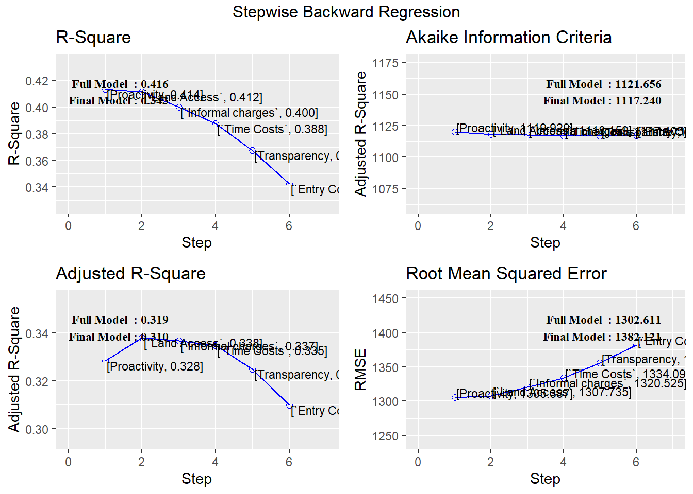
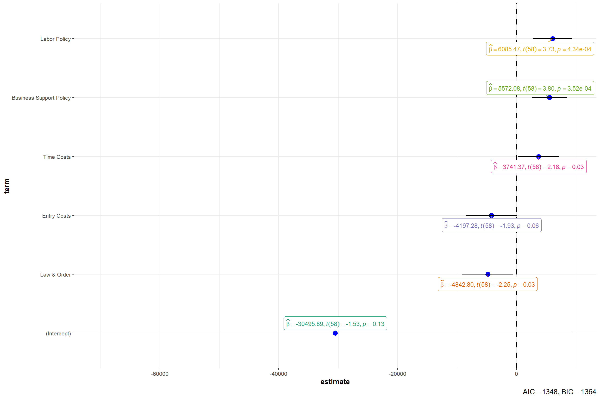
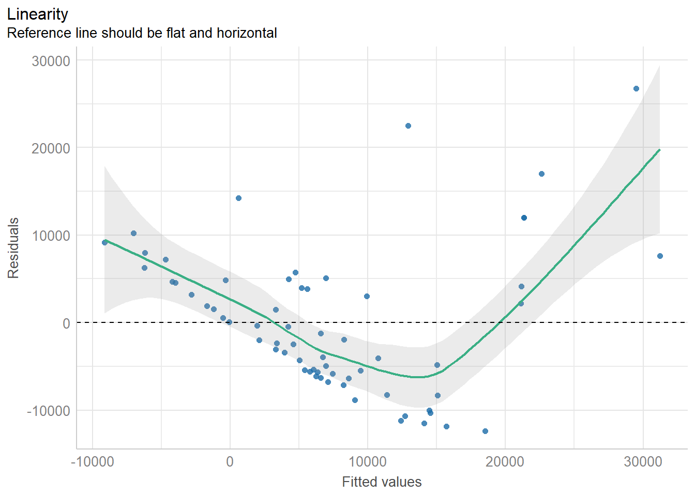
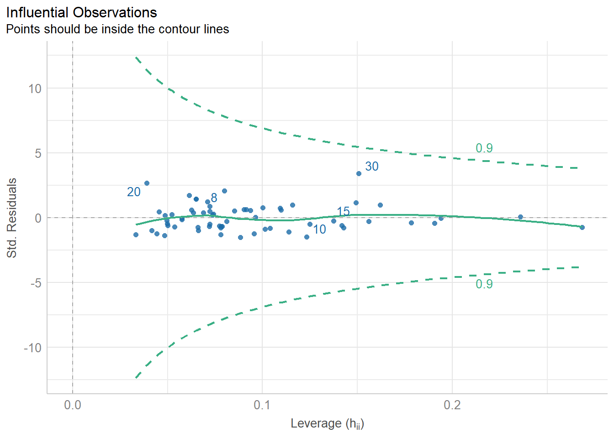
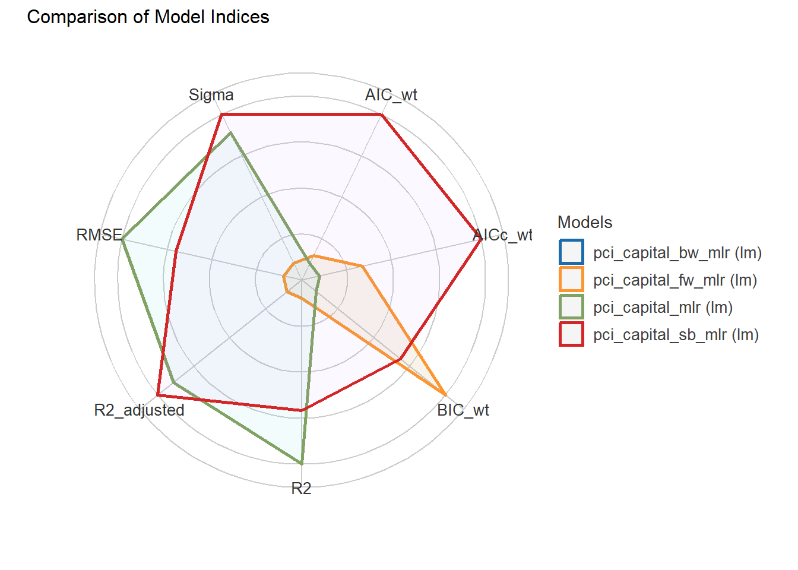
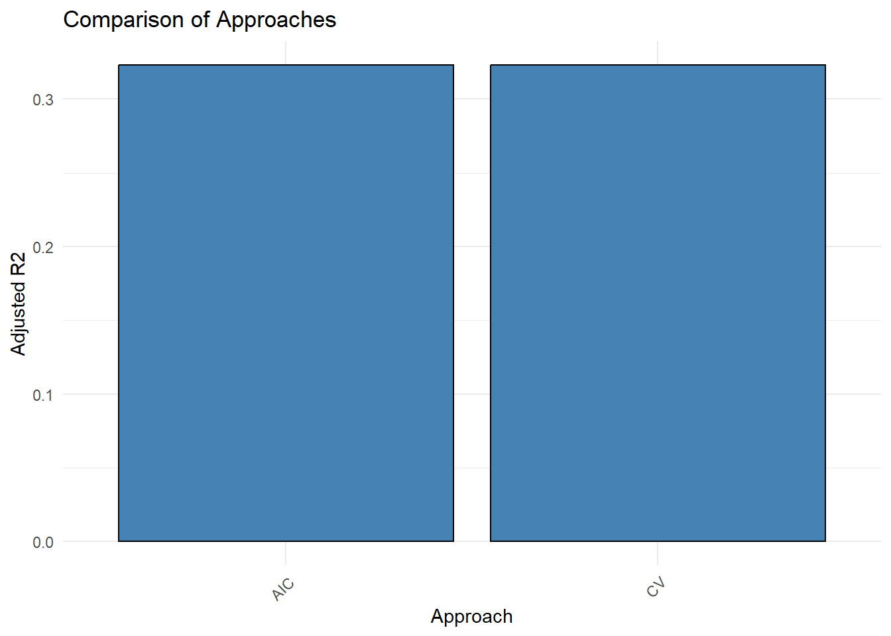
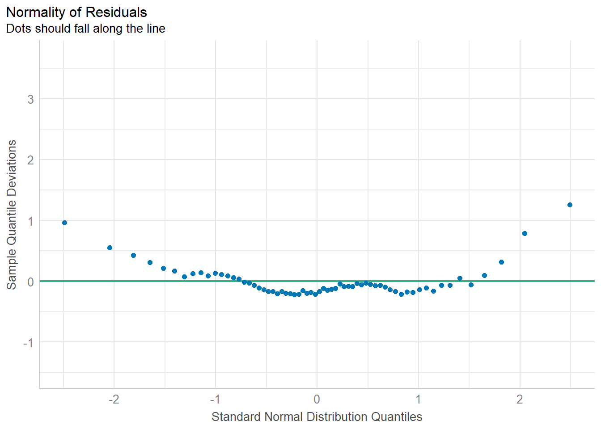
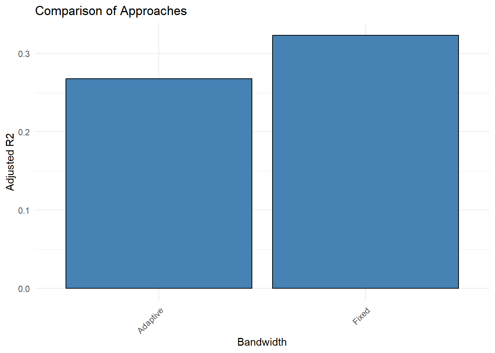

pacman::p_load(tidyverse, sf, readr, ggplot2, tmap, dplyr, animation, png, magick, openxlsx, readxl, sfdep, Kendall, forecast)Take-home Exercise 3: Provincial Competitiveness Index in Vietnam
Introduction
Provincial Competitiveness Index in Vietnam
Context: Vietnam’s provinces exhibit varying levels of competitiveness, as captured by the Provincial Competitiveness Index (PCI). This index evaluates critical dimensions that influence the investment climate and economic potential of each region.
Challenges: As different provinces seek to enhance their attractiveness for investment and business development, they face challenges related to regional disparities and the effectiveness of governance and infrastructure. Understanding the specific dimensions of PCI is essential for identifying competitive advantages and areas for improvement.
Key Trends
Dimension Variation: Provinces demonstrate diverse strengths and weaknesses across key PCI dimensions, such as entry costs, land access, transparency, productivity, and labor training. These variations directly impact the suitability of each province for different sectors.
Sectoral Suitability: The capacity of provinces to support various industries is influenced by the effectiveness of local policies and resources, which can lead to uneven development across sectors.
This Geospatial Analysis Will Focus on
Objectives: The primary aim of this analysis is to evaluate the individual dimensions of the Provincial Competitiveness Index (PCI) to assess their impact on the suitability of provinces for specific sectors, such as manufacturing, services, or technology.
Analysis Goals
Dimension-Specific Clustering: Utilize Local Indicators of Spatial Association (LISA) to explore how specific PCI dimensions contribute to clustering patterns, identifying which provinces excel in particular areas and why.
Sectoral Recommendations: Assess which provinces are best suited for specific industries based on their strengths in key PCI dimensions, offering insights into potential investment opportunities.
Future Projections: Apply predictive modeling techniques, including the Mandell model, to forecast trends in PCI dimensions over the coming years, providing insights into how these trends may influence sectoral suitability and competitiveness.
Significance
This project aims to provide a detailed analysis of how the dimensions of the Provincial Competitiveness Index shape the economic landscape of Vietnam. By focusing on specific PCI elements and their implications for sectoral suitability, this study will offer actionable insights for policymakers and businesses seeking to navigate Vietnam’s diverse economic environment.
1.0 Setup
1.1 Installing R-Packages
sf:For handling spatial vector data and transforming it into simple features (
sf) objects.Functions like
st_read()for importing spatial data andst_transform()for coordinate reference system transformations.
tidyverse: For data manipulation and transformation, including functions for working withtibbledata frames.readr: For reading in CSV or other text-based data files if needed.dplyr: provide data manipulation capabilities (eg. to group and summarize the relationships between these columns)
tmap: For creating thematic mapsggplot2: For additional custom visualizations if needed.scales: Transform the unit of measurement for coordinateanimation, png, magick: For animation work
sfdep: For performing both local and global spatial autocorrelation analysis
Kendall
forecast: For trend prediction
1.2 Data Acquisition
We will be using these dataset:
- Source: Vietnam - Subnational Administrative Boundaries at HDX.
- Province Boundaries: To map scores from various analyses onto geographic boundaries, enabling visualization of regional competitiveness patterns across the country
Source: Vietnam Statistics Office , Provincial Competitiveness Index
Provincial Competitiveness Index (PCI): To evaluate the competitive environment of each province, identifying strengths and weaknesses that influence investment potential.
Foreign Direct Investment (FDI): To assess the attractiveness of provinces for foreign investors and identify trends in investment across different sectors.
Gross Domestic Product (GDP): Provide insights into the economic performance of each province, allowing for comparisons with PCI dimensions and investment trends.
Industrial Production: Analyzed to determine the output levels of various industries, revealing which sectors are thriving in relation to provincial competitiveness.
1.3 Data Preparation and Wrangling
provincial_boundaries <- st_read(dsn = "data/boundaries/provincial", layer="geoBoundaries-VNM-ADM1")
class(provincial_boundaries)
st_crs(provincial_boundaries)
provincial_boundaries <- provincial_boundaries %>%
st_transform(crs = 3405) # Transform coordinate
# Drop & Rename column
provincial_boundaries <- provincial_boundaries %>%
select(shapeName, shapeISO, shapeGroup, geometry) %>%
rename(
province_vn = shapeName,
province_code = shapeISO,
country_code = shapeGroup
)
# Create a new column 'province_en' based on 'province_code'
provincial_boundaries <- provincial_boundaries %>%
mutate(province_en = case_when(
province_code == "VN-44" ~ "An Giang",
province_code == "VN-43" ~ "BRVT",
province_code == "VN-54" ~ "Bac Giang",
province_code == "VN-53" ~ "Bac Kan",
province_code == "VN-55" ~ "Bac Lieu",
province_code == "VN-56" ~ "Bac Ninh",
province_code == "VN-50" ~ "Ben Tre",
province_code == "VN-31" ~ "Binh Dinh",
province_code == "VN-57" ~ "Binh Duong",
province_code == "VN-58" ~ "Binh Phuoc",
province_code == "VN-40" ~ "Binh Thuan",
province_code == "VN-59" ~ "Ca Mau",
province_code == "VN-CT" ~ "Can Tho",
province_code == "VN-04" ~ "Cao Bang",
province_code == "VN-DN" ~ "Da Nang",
province_code == "VN-33" ~ "Dak Lak",
province_code == "VN-72" ~ "Dak Nong",
province_code == "VN-71" ~ "Dien Bien",
province_code == "VN-39" ~ "Dong Nai",
province_code == "VN-45" ~ "Dong Thap",
province_code == "VN-30" ~ "Gia Lai",
province_code == "VN-SG" ~ "HCMC",
province_code == "VN-03" ~ "Ha Giang",
province_code == "VN-63" ~ "Ha Nam",
province_code == "VN-HN" ~ "Ha Noi",
province_code == "VN-23" ~ "Ha Tinh",
province_code == "VN-61" ~ "Hai Duong",
province_code == "VN-HP" ~ "Hai Phong",
province_code == "VN-73" ~ "Hau Giang",
province_code == "VN-14" ~ "Hoa Binh",
province_code == "VN-66" ~ "Hung Yen",
province_code == "VN-34" ~ "Khanh Hoa",
province_code == "VN-47" ~ "Kien Giang",
province_code == "VN-28" ~ "Kon Tum",
province_code == "VN-01" ~ "Lai Chau",
province_code == "VN-35" ~ "Lam Dong",
province_code == "VN-09" ~ "Lang Son",
province_code == "VN-02" ~ "Lao Cai",
province_code == "VN-41" ~ "Long An",
province_code == "VN-67" ~ "Nam Dinh",
province_code == "VN-22" ~ "Nghe An",
province_code == "VN-18" ~ "Ninh Binh",
province_code == "VN-36" ~ "Ninh Thuan",
province_code == "VN-68" ~ "Phu Tho",
province_code == "VN-32" ~ "Phu Yen",
province_code == "VN-24" ~ "Quang Binh",
province_code == "VN-27" ~ "Quang Nam",
province_code == "VN-29" ~ "Quang Ngai",
province_code == "VN-13" ~ "Quang Ninh",
province_code == "VN-25" ~ "Quang Tri",
province_code == "VN-52" ~ "Soc Trang",
province_code == "VN-05" ~ "Son La",
province_code == "VN-26" ~ "TT-Hue",
province_code == "VN-37" ~ "Tay Ninh",
province_code == "VN-20" ~ "Thai Binh",
province_code == "VN-69" ~ "Thai Nguyen",
province_code == "VN-21" ~ "Thanh Hoa",
province_code == "VN-46" ~ "Tien Giang",
province_code == "VN-51" ~ "Tra Vinh",
province_code == "VN-07" ~ "Tuyen Quang",
province_code == "VN-49" ~ "Vinh Long",
province_code == "VN-70" ~ "Vinh Phuc",
province_code == "VN-06" ~ "Yen Bai"
)) %>%
select (province_en, everything())
write_rds(provincial_boundaries, "data/rds/provincial_boundaries.rds")
Note
Since Coordinate Reference System of provincial_boundaries
is in 4326 (unit of measurement = degree), we have to transform it
Also, we need to have an english name for each province to allow us to map the province boundary with other dataset
pci_2012 <- read_xlsx("data/provincial_competitiveness_index/2012.xlsx")
pci_2013 <- read_xlsx("data/provincial_competitiveness_index/2013.xlsx")
pci_2014 <- read_xlsx("data/provincial_competitiveness_index/2014.xlsx")
pci_2015 <- read_xlsx("data/provincial_competitiveness_index/2015.xlsx")
pci_2016 <- read_xlsx("data/provincial_competitiveness_index/2016.xlsx")
pci_2017 <- read_xlsx("data/provincial_competitiveness_index/2017.xlsx")
pci_2018 <- read_xlsx("data/provincial_competitiveness_index/2018.xlsx")
pci_2019 <- read_xlsx("data/provincial_competitiveness_index/2019.xlsx")
pci_2020 <- read_xlsx("data/provincial_competitiveness_index/2020.xlsx")
pci_2021 <- read_xlsx("data/provincial_competitiveness_index/2021.xlsx")
pci_2022 <- read_xlsx("data/provincial_competitiveness_index/2022.xlsx")
# Combine all datasets with the year column and move year to the front
pci_combined <- bind_rows(
mutate(pci_2012, year = 2012),
mutate(pci_2013, year = 2013),
mutate(pci_2014, year = 2014),
mutate(pci_2015, year = 2015),
mutate(pci_2016, year = 2016),
mutate(pci_2017, year = 2017),
mutate(pci_2018, year = 2018),
mutate(pci_2019, year = 2019),
mutate(pci_2020, year = 2020),
mutate(pci_2021, year = 2021),
mutate(pci_2022, year = 2022)
) %>%
left_join(select(pci_2022, province_en, Region), by = "province_en") %>%
select (1:13, 15) %>%
rename(region = Region.y) %>%
select(year, region, everything())
write.xlsx(pci_combined, "data/rds/combined_pci.xlsx")
agri_sector <- pci_combined %>%
left_join(provincial_boundaries, by = "province_en") %>%
mutate(
weighted_score = `Land Access` * 0.30 +
`Law & Order` * 0.25 +
`Labor Policy` * 0.20 +
`Business Support Policy` * 0.15 +
`Entry Costs` * 0.10
) %>%
select(province_en, year, weighted_score, geometry)
write_rds(agri_sector, "data/rds/agri_sector.rds")
Note
Some datasets were inconsistent, so I created a new sheet called ‘summary’ and renamed the old one to ‘summary - old’. The new sheet uses the XLOOKUP function for quick data population from the old sheet, which is much faster compared to handling it in R. In R, different sets of code would be required to manage various data types, making the process more time-consuming.
For economy_pie dataset, we have also performed simple data reformatting shown in ‘Summary’ sheet from ‘Summary -old’ sheet
2.0 Importing the clean set of data
provincial_boundaries <- read_rds("data/rds/provincial_boundaries.rds")
economy_pie <- read_xlsx("data/economy_pie.xlsx")
pci_combined <- read_xlsx("data/rds/combined_pci.xlsx")
agri_sector <- read_rds("data/rds/agri_sector.rds")3.0 Exploratory Data Analysis
Key backbone industries Performance
# Clean and ensure the percentage columns are numeric
data <- economy_pie %>%
mutate(
agriculture_forestry_fishing = as.numeric(gsub("[^0-9.]", "", `Agriculture, forestry and fishing (%)`)),
industry_construction = as.numeric(gsub("[^0-9.]", "", `Industry and construction (%)`)),
service = as.numeric(gsub("[^0-9.]", "", `Service (%)`)),
)
# Convert wide format to long format for easier analysis
data_long <- data %>%
pivot_longer(cols = c(agriculture_forestry_fishing, industry_construction, service),
names_to = "industry",
values_to = "percent")
# Calculate yearly percentage change for each sector
data_long <- data_long %>%
group_by(industry) %>%
arrange(year) %>%
mutate(percent_change = (percent - lag(percent)) / lag(percent) * 100) %>%
ungroup()
# Identify the sector with the highest average growth
upcoming_sector <- data_long %>%
group_by(industry) %>%
summarise(avg_percent_change = mean(percent_change, na.rm = TRUE)) %>%
arrange(desc(avg_percent_change))
# Print the sector with the highest average percentage increase
print(upcoming_sector)# A tibble: 3 × 2
industry avg_percent_change
<chr> <dbl>
1 industry_construction 0.642
2 service 0.563
3 agriculture_forestry_fishing -2.88 # Plot the trend for each sector
ggplot(data_long, aes(x = year, y = percent, color = industry, group = industry)) +
geom_line() +
geom_point() +
labs(title = "Sector Percentage Contribution Over Time",
x = "Year", y = "Percentage (%)") +
theme_minimal()
Note
The agriculture, forestry, and fishing sector is experiencing a downward trend, with a -2.88% change. In contrast, the industry, construction, and service sectors are on the rise, with increases of 0.64% and 0.56%, respectively.
It’s important to carefully consider your investment choices, as the industry, construction, and service sectors are emerging as promising areas for growth.
4.0 Provinces suitable for Agriculture, Forestry and Fishing sector
Importance Scorecard
We will initially utilize an importance scorecard to identify the key factors that facilitate investment in the Agriculture, Forestry, and Fishing sector. Each factor will be assigned a weight based on its significance in influencing investment decisions.
| Factors | Weightage | Remarks |
|---|---|---|
| Land Access | 30 | Efficient use of land is a significant factor, particularly in Vietnam, where land reforms and policies directly impact productivity. Sustainable land management and allocation are crucial to achieving long-term growth in this sector |
| Law & Order | 25 | Law enforcement to protect property rights and ensure compliance with environmental and labor standards is increasingly important |
| Labor Policy | 20 | Labor costs, which are rising, and the need for skilled labor are critical in making agriculture more knowledge-based and innovative |
| Business Support Policy | 15 | Supporting policies for agribusiness development, particularly in adding value and driving sustainability through innovation, are essential. The government’s role in facilitating this transformation with proactive policies is critical |
| Entry Costs | 10 | Reducing barriers for smaller or new businesses in agriculture can help foster innovation and inclusivity in the sector |
Local Indicator of Spatial Association (LISA)
The application of Local Indicators of Spatial Association (LISA) in this analysis is intended to investigate the spatial dynamics of the agricultural sector across multiple years.
By conducting LISA for each individual year, this analysis seeks to identify local patterns of correlation that reveal significant clusters of high and low agricultural performance over time.
Such a year-by-year assessment provides critical insights into the fluctuations of agricultural metrics across different provinces, allowing for a thorough evaluation of the spatial relationships inherent in the sector.
image_read("data/rds/agri_sector/lisa_map_2012.png")Deriving Queen’s Contiguity weights: sfdep methods
agri_sector_2012 <- agri_sector %>%
filter(year == 2012)
agri_sector_2012 <- st_as_sf(agri_sector_2012)
nb <- st_contiguity(agri_sector_2012$geometry)
wt <- st_weights(nb, style = "W", allow_zero = TRUE)
agri_sector_2012 <- agri_sector_2012 %>%
mutate(
nb = nb,
wt = wt,
.before = 1
)Computing Local Moran’s I
lisa_agri_sector_2012 <- agri_sector_2012 %>%
mutate(local_moran = local_moran(
weighted_score, nb, wt, nsim = 99, zero.policy = TRUE),
.before = 1) %>%
unnest(local_moran)LISA Analysis
png("data/rds/agri_sector/lisa_map_2012.png", width = 1600, height = 1200)
lisa__agri_sector_sig_2012 <- lisa_agri_sector_2012 %>%
filter(p_ii_sim < 0.05)
tmap_mode("plot")
tm_shape(lisa_agri_sector_2012) +
tm_polygons() +
tm_borders(alpha = 0.5) +
tm_shape(lisa__agri_sector_sig_2012) +
tm_fill("mean") +
tm_borders(alpha = 0.4) +
tm_layout(main.title = "LISA Map 2012",
main.title.size = 2.5,
legend.text.size = 2.0,
legend.title.size = 2.7,
legend.position = c("right", "bottom"),
frame = TRUE) # Add a frame around the map
# Close the graphic device
dev.off()image_read("data/rds/agri_sector/lisa_map_2013.png")
Deriving Queen’s Contiguity weights: sfdep methods
agri_sector_2013 <- agri_sector %>%
filter(year == 2013)
agri_sector_2013 <- st_as_sf(agri_sector_2013)
nb <- st_contiguity(agri_sector_2013$geometry)
wt <- st_weights(nb, style = "W", allow_zero = TRUE)
agri_sector_2013 <- agri_sector_2013 %>%
mutate(
nb = nb,
wt = wt,
.before = 1
)Computing Local Moran’s I
lisa_agri_sector_2013 <- agri_sector_2013 %>%
mutate(local_moran = local_moran(
weighted_score, nb, wt, nsim = 99, zero.policy = TRUE),
.before = 1) %>%
unnest(local_moran)LISA Analysis
png("data/rds/agri_sector/lisa_map_2013.png", width = 1600, height = 1200)
lisa__agri_sector_sig_2013 <- lisa_agri_sector_2013 %>%
filter(p_ii_sim < 0.05)
tmap_mode("plot")
tm_shape(lisa_agri_sector_2013) +
tm_polygons() +
tm_borders(alpha = 0.5) +
tm_shape(lisa__agri_sector_sig_2013) +
tm_fill("mean") +
tm_borders(alpha = 0.4) +
tm_layout(main.title = "LISA Map 2013",
main.title.size = 2.5,
legend.text.size = 2.0,
legend.title.size = 2.7,
legend.position = c("right", "bottom"),
frame = TRUE) # Add a frame around the map
# Close the graphic device
dev.off()image_read("data/rds/agri_sector/lisa_map_2014.png")Deriving Queen’s Contiguity weights: sfdep methods
agri_sector_2014 <- agri_sector %>%
filter(year == 2014)
agri_sector_2014 <- st_as_sf(agri_sector_2014)
nb <- st_contiguity(agri_sector_2014$geometry)
wt <- st_weights(nb, style = "W", allow_zero = TRUE)
agri_sector_2014 <- agri_sector_2014 %>%
mutate(
nb = nb,
wt = wt,
.before = 1
)Computing Local Moran’s I
lisa_agri_sector_2014 <- agri_sector_2014 %>%
mutate(local_moran = local_moran(
weighted_score, nb, wt, nsim = 99, zero.policy = TRUE),
.before = 1) %>%
unnest(local_moran)LISA Analysis
png("data/rds/agri_sector/lisa_map_2014.png", width = 1600, height = 1200)
lisa__agri_sector_sig_2014 <- lisa_agri_sector_2014 %>%
filter(p_ii_sim < 0.05)
tmap_mode("plot")
tm_shape(lisa_agri_sector_2014) +
tm_polygons() +
tm_borders(alpha = 0.5) +
tm_shape(lisa__agri_sector_sig_2014) +
tm_fill("mean") +
tm_borders(alpha = 0.4) +
tm_layout(main.title = "LISA Map 2014",
main.title.size = 2.5,
legend.text.size = 2.0,
legend.title.size = 2.7,
legend.position = c("right", "bottom"),
frame = TRUE) # Add a frame around the map
# Close the graphic device
dev.off()image_read("data/rds/agri_sector/lisa_map_2015.png")
Deriving Queen’s Contiguity weights: sfdep methods
agri_sector_2015 <- agri_sector %>%
filter(year == 2015)
agri_sector_2015 <- st_as_sf(agri_sector_2015)
nb <- st_contiguity(agri_sector_2015$geometry)
wt <- st_weights(nb, style = "W", allow_zero = TRUE)
agri_sector_2015 <- agri_sector_2015 %>%
mutate(
nb = nb,
wt = wt,
.before = 1
)Computing Local Moran’s I
lisa_agri_sector_2015 <- agri_sector_2015 %>%
mutate(local_moran = local_moran(
weighted_score, nb, wt, nsim = 99, zero.policy = TRUE),
.before = 1) %>%
unnest(local_moran)LISA Analysis
png("data/rds/agri_sector/lisa_map_2015.png", width = 1600, height = 1200)
lisa__agri_sector_sig_2015 <- lisa_agri_sector_2015 %>%
filter(p_ii_sim < 0.05)
tmap_mode("plot")
tm_shape(lisa_agri_sector_2015) +
tm_polygons() +
tm_borders(alpha = 0.5) +
tm_shape(lisa__agri_sector_sig_2015) +
tm_fill("mean") +
tm_borders(alpha = 0.4) +
tm_layout(main.title = "LISA Map 2015",
main.title.size = 2.5,
legend.text.size = 2.0,
legend.title.size = 2.7,
legend.position = c("right", "bottom"),
frame = TRUE) # Add a frame around the map
# Close the graphic device
dev.off()image_read("data/rds/agri_sector/lisa_map_2016.png")
Deriving Queen’s Contiguity weights: sfdep methods
agri_sector_2016 <- agri_sector %>%
filter(year == 2016)
agri_sector_2016 <- st_as_sf(agri_sector_2016)
nb <- st_contiguity(agri_sector_2016$geometry)
wt <- st_weights(nb, style = "W", allow_zero = TRUE)
agri_sector_2016 <- agri_sector_2016 %>%
mutate(
nb = nb,
wt = wt,
.before = 1
)Computing Local Moran’s I
lisa_agri_sector_2016 <- agri_sector_2016 %>%
mutate(local_moran = local_moran(
weighted_score, nb, wt, nsim = 99, zero.policy = TRUE),
.before = 1) %>%
unnest(local_moran)LISA Analysis
png("data/rds/agri_sector/lisa_map_2016.png", width = 1600, height = 1200)
lisa__agri_sector_sig_2016 <- lisa_agri_sector_2016 %>%
filter(p_ii_sim < 0.05)
tmap_mode("plot")
tm_shape(lisa_agri_sector_2016) +
tm_polygons() +
tm_borders(alpha = 0.5) +
tm_shape(lisa__agri_sector_sig_2016) +
tm_fill("mean") +
tm_borders(alpha = 0.4) +
tm_layout(main.title = "LISA Map 2016",
main.title.size = 2.5,
legend.text.size = 2.0,
legend.title.size = 2.7,
legend.position = c("right", "bottom"),
frame = TRUE) # Add a frame around the map
# Close the graphic device
dev.off()image_read("data/rds/agri_sector/lisa_map_2017.png")
Deriving Queen’s Contiguity weights: sfdep methods
agri_sector_2017 <- agri_sector %>%
filter(year == 2017)
agri_sector_2017 <- st_as_sf(agri_sector_2017)
nb <- st_contiguity(agri_sector_2017$geometry)
wt <- st_weights(nb, style = "W", allow_zero = TRUE)
agri_sector_2017 <- agri_sector_2017 %>%
mutate(
nb = nb,
wt = wt,
.before = 1
)Computing Local Moran’s I
lisa_agri_sector_2017 <- agri_sector_2017 %>%
mutate(local_moran = local_moran(
weighted_score, nb, wt, nsim = 99, zero.policy = TRUE),
.before = 1) %>%
unnest(local_moran)LISA Analysis
png("data/rds/agri_sector/lisa_map_2017.png", width = 1600, height = 1200)
lisa__agri_sector_sig_2017 <- lisa_agri_sector_2017 %>%
filter(p_ii_sim < 0.05)
tmap_mode("plot")
tm_shape(lisa_agri_sector_2017) +
tm_polygons() +
tm_borders(alpha = 0.5) +
tm_shape(lisa__agri_sector_sig_2017) +
tm_fill("mean") +
tm_borders(alpha = 0.4) +
tm_layout(main.title = "LISA Map 2017",
main.title.size = 2.5,
legend.text.size = 2.0,
legend.title.size = 2.7,
legend.position = c("right", "bottom"),
frame = TRUE) # Add a frame around the map
# Close the graphic device
dev.off()image_read("data/rds/agri_sector/lisa_map_2018.png")
Deriving Queen’s Contiguity weights: sfdep methods
agri_sector_2018 <- agri_sector %>%
filter(year == 2018)
agri_sector_2018 <- st_as_sf(agri_sector_2018)
nb <- st_contiguity(agri_sector_2018$geometry)
wt <- st_weights(nb, style = "W", allow_zero = TRUE)
agri_sector_2018 <- agri_sector_2018 %>%
mutate(
nb = nb,
wt = wt,
.before = 1
)Computing Local Moran’s I
lisa_agri_sector_2018 <- agri_sector_2018 %>%
mutate(local_moran = local_moran(
weighted_score, nb, wt, nsim = 99, zero.policy = TRUE),
.before = 1) %>%
unnest(local_moran)LISA Analysis
png("data/rds/agri_sector/lisa_map_2018.png", width = 1600, height = 1200)
lisa__agri_sector_sig_2018 <- lisa_agri_sector_2018 %>%
filter(p_ii_sim < 0.05)
tmap_mode("plot")
tm_shape(lisa_agri_sector_2018) +
tm_polygons() +
tm_borders(alpha = 0.5) +
tm_shape(lisa__agri_sector_sig_2018) +
tm_fill("mean") +
tm_borders(alpha = 0.4) +
tm_layout(main.title = "LISA Map 2018",
main.title.size = 2.5,
legend.text.size = 2.0,
legend.title.size = 2.7,
legend.position = c("right", "bottom"),
frame = TRUE) # Add a frame around the map
# Close the graphic device
dev.off()image_read("data/rds/agri_sector/lisa_map_2019.png")
Deriving Queen’s Contiguity weights: sfdep methods
agri_sector_2019 <- agri_sector %>%
filter(year == 2019)
agri_sector_2019 <- st_as_sf(agri_sector_2019)
nb <- st_contiguity(agri_sector_2019$geometry)
wt <- st_weights(nb, style = "W", allow_zero = TRUE)
agri_sector_2019 <- agri_sector_2019 %>%
mutate(
nb = nb,
wt = wt,
.before = 1
)Computing Local Moran’s I
lisa_agri_sector_2019 <- agri_sector_2019 %>%
mutate(local_moran = local_moran(
weighted_score, nb, wt, nsim = 99, zero.policy = TRUE),
.before = 1) %>%
unnest(local_moran)LISA Analysis
png("data/rds/agri_sector/lisa_map_2019.png", width = 1600, height = 1200)
lisa__agri_sector_sig_2019 <- lisa_agri_sector_2019 %>%
filter(p_ii_sim < 0.05)
tmap_mode("plot")
tm_shape(lisa_agri_sector_2019) +
tm_polygons() +
tm_borders(alpha = 0.5) +
tm_shape(lisa__agri_sector_sig_2019) +
tm_fill("mean") +
tm_borders(alpha = 0.4) +
tm_layout(main.title = "LISA Map 2019",
main.title.size = 2.5,
legend.text.size = 2.0,
legend.title.size = 2.7,
legend.position = c("right", "bottom"),
frame = TRUE) # Add a frame around the map
# Close the graphic device
dev.off()image_read("data/rds/agri_sector/lisa_map_2020.png")
Deriving Queen’s Contiguity weights: sfdep methods
agri_sector_2020 <- agri_sector %>%
filter(year == 2020)
agri_sector_2020 <- st_as_sf(agri_sector_2020)
nb <- st_contiguity(agri_sector_2020$geometry)
wt <- st_weights(nb, style = "W", allow_zero = TRUE)
agri_sector_2020 <- agri_sector_2020 %>%
mutate(
nb = nb,
wt = wt,
.before = 1
)Computing Local Moran’s I
lisa_agri_sector_2020 <- agri_sector_2020 %>%
mutate(local_moran = local_moran(
weighted_score, nb, wt, nsim = 99, zero.policy = TRUE),
.before = 1) %>%
unnest(local_moran)LISA Analysis
png("data/rds/agri_sector/lisa_map_2020.png", width = 1600, height = 1200)
lisa__agri_sector_sig_2020 <- lisa_agri_sector_2020 %>%
filter(p_ii_sim < 0.05)
tmap_mode("plot")
tm_shape(lisa_agri_sector_2020) +
tm_polygons() +
tm_borders(alpha = 0.5) +
tm_shape(lisa__agri_sector_sig_2020) +
tm_fill("mean") +
tm_borders(alpha = 0.4) +
tm_layout(main.title = "LISA Map 2020",
main.title.size = 2.5,
legend.text.size = 2.0,
legend.title.size = 2.7,
legend.position = c("right", "bottom"),
frame = TRUE) # Add a frame around the map
# Close the graphic device
dev.off()image_read("data/rds/agri_sector/lisa_map_2021.png")Deriving Queen’s Contiguity weights: sfdep methods
agri_sector_2021 <- agri_sector %>%
filter(year == 2021)
agri_sector_2021 <- st_as_sf(agri_sector_2021)
nb <- st_contiguity(agri_sector_2021$geometry)
wt <- st_weights(nb, style = "W", allow_zero = TRUE)
agri_sector_2021 <- agri_sector_2021 %>%
mutate(
nb = nb,
wt = wt,
.before = 1
)Computing Local Moran’s I
lisa_agri_sector_2021 <- agri_sector_2021 %>%
mutate(local_moran = local_moran(
weighted_score, nb, wt, nsim = 99, zero.policy = TRUE),
.before = 1) %>%
unnest(local_moran)LISA Analysis
png("data/rds/agri_sector/lisa_map_2021.png", width = 1600, height = 1200)
lisa__agri_sector_sig_2021 <- lisa_agri_sector_2021 %>%
filter(p_ii_sim < 0.05)
tmap_mode("plot")
tm_shape(lisa_agri_sector_2021) +
tm_polygons() +
tm_borders(alpha = 0.5) +
tm_shape(lisa__agri_sector_sig_2021) +
tm_fill("mean") +
tm_borders(alpha = 0.4) +
tm_layout(main.title = "LISA Map 2021",
main.title.size = 2.5,
legend.text.size = 2.0,
legend.title.size = 2.7,
legend.position = c("right", "bottom"),
frame = TRUE) # Add a frame around the map
# Close the graphic device
dev.off()image_read("data/rds/agri_sector/lisa_map_2022.png")
Deriving Queen’s Contiguity weights: sfdep methods
agri_sector_2022 <- agri_sector %>%
filter(year == 2022)
agri_sector_2022 <- st_as_sf(agri_sector_2022)
nb <- st_contiguity(agri_sector_2022$geometry)
wt <- st_weights(nb, style = "W", allow_zero = TRUE)
agri_sector_2022 <- agri_sector_2022 %>%
mutate(
nb = nb,
wt = wt,
.before = 1
)Computing Local Moran’s I
lisa_agri_sector_2022 <- agri_sector_2022 %>%
mutate(local_moran = local_moran(
weighted_score, nb, wt, nsim = 99, zero.policy = TRUE),
.before = 1) %>%
unnest(local_moran)LISA Analysis
png("data/rds/agri_sector/lisa_map_2022.png", width = 1600, height = 1200)
lisa__agri_sector_sig_2022 <- lisa_agri_sector_2022 %>%
filter(p_ii_sim < 0.05)
tmap_mode("plot")
tm_shape(lisa_agri_sector_2022) +
tm_polygons() +
tm_borders(alpha = 0.5) +
tm_shape(lisa__agri_sector_sig_2022) +
tm_fill("mean") +
tm_borders(alpha = 0.4) +
tm_layout(main.title = "LISA Map 2022",
main.title.size = 2.5,
legend.text.size = 2.0,
legend.title.size = 2.7,
legend.position = c("right", "bottom"),
frame = TRUE) # Add a frame around the map
# Close the graphic device
dev.off()Hot Spot & Cold Spot Area Analysis (HCSA)
Subsequent to the LISA analysis, a Hotspot and Coldspot Analysis (HCSA) will be conducted to evaluate the temporal trends in agricultural performance over the same time frame.
HCSA is instrumental in identifying areas that have exhibited consistent patterns of improvement or decline over the years. Through the assessment of the evolution of hot and cold spots, this analysis will highlight emerging investment opportunities while also identifying regions that require targeted interventions.
image_read("data/rds/agri_sector/hcsa_map.png")
agri_sector <- st_as_sf(agri_sector)
nb <- st_contiguity(agri_sector$geometry)
wt <- st_weights(nb, style = "W", allow_zero = TRUE)
agri_sector <- agri_sector %>%
mutate(
nb = nb,
wt = wt,
.before = 1
)
hcsa <- agri_sector %>%
mutate(local_Gi = local_gstar_perm(
weighted_score, nb, wts, nsim = 99),
.before = 1) %>%
unnest(local_Gi)png("data/rds/agri_sector/hcsa_map.png", width = 1600, height = 1200)
HCSA_sig <- hcsa %>%
filter(p_sim < 0.05)
tmap_mode("plot")
tm_shape(hcsa) +
tm_polygons() +
tm_borders(alpha = 0.5) +
tm_shape(HCSA_sig) +
tm_fill("cluster") +
tm_borders(alpha = 0.4) +
tm_layout(main.title = "HCSA",
main.title.size = 2.5,
legend.text.size = 2.0,
legend.position = c("right", "bottom"),
legend.title.size = 2.7)
# Close the graphic device
dev.off()hcsa_summary <- read_rds("data/rds/agri_sector/hcsa_summary.rds")
# Show all rows and columns
print(hcsa_summary, n = Inf, width = Inf)Simple feature collection with 1 feature and 10 fields
Geometry type: MULTIPOLYGON
Dimension: XY
Bounding box: xmin: 205950.8 ymin: 933052.3 xmax: 1597017 ymax: 2586945
Projected CRS: VN-2000 / UTM zone 48N
# A tibble: 1 × 11
mean_gi_star min_gi_star max_gi_star sd_gi_star mean_p_value min_p_value
<dbl> <dbl> <dbl> <dbl> <dbl> <dbl>
1 -0.0406 -4.74 4.04 2.02 0.307 0.000000180
max_p_value count_hot_spots count_cold_spots count_non_significant
<dbl> <int> <int> <int>
1 0.999 128 126 450
geometry
<MULTIPOLYGON [m]>
1 (((481707.8 934784, 481390.2 933367, 480954.2 933052.3, 480280.8 933564.3, 47…# Function to summarize HCSA values
summarize_hcsa <- function(data) {
data %>%
summarise(
mean_gi_star = mean(gi_star, na.rm = TRUE),
min_gi_star = min(gi_star, na.rm = TRUE),
max_gi_star = max(gi_star, na.rm = TRUE),
sd_gi_star = sd(gi_star, na.rm = TRUE),
mean_p_value = mean(p_value, na.rm = TRUE),
min_p_value = min(p_value, na.rm = TRUE),
max_p_value = max(p_value, na.rm = TRUE),
count_hot_spots = sum(gi_star > 0 & p_value < 0.05),
count_cold_spots = sum(gi_star < 0 & p_value < 0.05),
count_non_significant = sum(p_value >= 0.05),
geometry = st_union(geometry) # Combine geometries
)
}
hcsa_summary <- summarize_hcsa(hcsa)
write_rds(hcsa_summary, "data/rds/agri_sector/hcsa_summary.rds")
HCSA Summary Interpretation
Mean gi_star: -0.0405665
- The average local spatial autocorrelation is slightly negative, suggesting that, on average, regions with lower agricultural competitiveness tend to cluster together (cold spots). This could indicate areas that are struggling in the agricultural sector.
Standard Deviation (sd_gi_star): 2.018674
- Interpretation: A relatively high standard deviation indicates considerable variation in agricultural competitiveness across regions. This suggests that while some areas excel, others may significantly lag, pointing to disparities in agricultural practices or resources.
Mean p_value: 0.3060628
- The average p-value suggests that, overall, many regions do not show statistically significant clustering of agricultural competitiveness. However, the mean being above 0.05 indicates that a significant portion of the regions might not exhibit consistent spatial patterns of high or low competitiveness.
Mann-Kendall Test for trend
This will evaluate the competitiveness trends of the Agriculture, Forestry, and Fishing sectors across each province over multiple years.
The goal is to identify provinces that are becoming more competitive as well as those that are experiencing a decline in competitiveness.
trend_results <- read_rds("data/rds/agri_sector/trend_results.rds")increasing_trends <- trend_results %>%
filter(trend_status == "Increasing") %>%
pull(province_en)
# Check if increasing_trends is null or empty and set a default message
if (is.null(increasing_trends) || length(increasing_trends) == 0) {
result <- "NIL"
} else {
result <- paste(increasing_trends, collapse = ", ")
}
cat(result, "\n")An Giang, BRVT, Bac Giang, Bac Kan, Bac Ninh, Ben Tre, Binh Dinh, Binh Duong, Binh Phuoc, Binh Thuan, Ca Mau, Can Tho, Cao Bang, Dak Lak, Dak Nong, Dien Bien, Dong Nai, Dong Thap, Gia Lai, HCMC, Ha Giang, Ha Noi, Ha Tinh, Hai Duong, Hai Phong, Hoa Binh, Hung Yen, Khanh Hoa, Kon Tum, Lam Dong, Lang Son, Lao Cai, Long An, Nam Dinh, Nghe An, Ninh Binh, Ninh Thuan, Phu Tho, Phu Yen, Quang Nam, Quang Ninh, Quang Tri, Soc Trang, Son La, TT-Hue, Thai Binh, Thai Nguyen, Thanh Hoa, Tuyen Quang, Vinh Long, Vinh Phuc, Yen Bai decreasing_trends <- trend_results %>%
filter(trend_status == "Decreasing") %>%
pull(province_en)
# Check if decreasing_trends is null or empty and set a default message
if (is.null(decreasing_trends) || length(decreasing_trends) == 0) {
result <- "NIL"
} else {
result <- paste(decreasing_trends, collapse = ", ")
}
cat(result, "\n")NIL stable_trends <- trend_results %>%
filter(trend_status == "Stable") %>%
pull(province_en)
# Check if stable_trends is null or empty and set a default message
if (is.null(stable_trends) || length(stable_trends) == 0) {
result <- "NIL"
} else {
result <- paste(stable_trends, collapse = ", ")
}
cat(result, "\n")Bac Lieu, Da Nang, Ha Nam, Hau Giang, Kien Giang, Lai Chau, Quang Binh, Quang Ngai, Tay Ninh, Tien Giang, Tra Vinh
Note
The majority of provinces are experiencing increasing trends in competitiveness, with only a few remaining relatively stable and notably none showing a decline. These findings indicate a largely positive outlook for the Agriculture, Forestry, and Fishing sectors, presenting significant investment opportunities for growth and development.
However, it is important to consider that, despite the rising competitiveness, the GDP contribution from this sector has been shrinking over the years, even as the total GDP for all three sectors continues to increase. This trend suggests a need for strategic investment that not only focuses on enhancing competitiveness but also aims to reverse the decline in GDP share.
Investors can capitalize on the upward trajectory of competitiveness by targeting provinces that show strong potential for profitable ventures. Additionally, policymakers and stakeholders can leverage this information to attract investment by strengthening competitive strategies in stable provinces. By building on existing strengths and addressing potential challenges, these sectors can enhance their appeal to investors and work towards revitalizing their GDP contributions, ultimately driving sustainable growth and innovation.
# Apply Mann-Kendall Test for each province
trend_results <- agri_sector %>%
group_by(province_en) %>%
summarise(
weighted_score = list(weighted_score),
trend = MannKendall(unlist(weighted_score))$tau, # Tau value indicates trend direction
p_value = MannKendall(unlist(weighted_score))$sl, # p-value for significance
)
# Classify trends based on the Mann-Kendall results
trend_results <- trend_results %>%
mutate(trend_status = case_when(
p_value < 0.05 & trend > 0 ~ "Increasing",
p_value < 0.05 & trend < 0 ~ "Decreasing",
p_value >= 0.05 ~ "Stable",
TRUE ~ "No sufficient data"
))
write_rds(trend_results, "data/rds/agri_sector/trend_results.rds")Dendrogram Analysis to Identify Competitiveness Clusters
It visually clusters provinces with similar trends in weighted scores across years. By grouping provinces based on competitiveness factors, it highlights regions with shared strengths or challenges, allowing stakeholders to identify investment-friendly clusters or regions needing targeted support.
average_scores <- agri_sector %>%
group_by(province_en) %>%
summarise(avg_weighted_score = mean(weighted_score, na.rm = TRUE)) %>%
ungroup()
# Convert province_en to row names
average_scores_rownames <- average_scores %>%
column_to_rownames(var = "province_en")
proxmat <- dist(average_scores_rownames, method = 'euclidean')
hclust_ward <- hclust(proxmat, method = 'ward.D')
groups <- as.factor(cutree(hclust_ward, k=6))plot(hclust_ward, cex=0.6)
rect.hclust(hclust_ward, k=6, border=2.5)Forecasting Near-Term Provincial Competitiveness
This foresight enables investors and decision-makers to proactively anticipate challenges and seize opportunities, allowing them to respond swiftly and effectively.
image_read("data/rds/agri_sector/prediction_hcsa_map.png")arima_forecasts <- list()
agri_sector <- pci_combined %>%
left_join(provincial_boundaries, by = "province_en") %>%
mutate(
weighted_score = `Land Access` * 0.30 +
`Law & Order` * 0.25 +
`Labor Policy` * 0.20 +
`Business Support Policy` * 0.15 +
`Entry Costs` * 0.10
) %>%
select(province_en, year, weighted_score, geometry)
for (province in unique(agri_sector$province_en)) {
province_data <- agri_sector %>%
filter(province_en == province) %>%
arrange(year)
# Create time series object for weighted score
ts_data <- ts(province_data$weighted_score, start = min(province_data$year), frequency = 1)
# Fit ARIMA model
fit <- auto.arima(ts_data)
# Forecast for the next 5 years (2023 to 2027)
forecasted_values <- forecast(fit, h = 5)
# Store forecast results for each year
arima_forecasts[[province]] <- data.frame(
province_en = province,
year = 2023:2027,
predicted_weighted_score = as.numeric(forecasted_values$mean)
)
}
# Combine forecast results for all provinces
future_predictions <- bind_rows(arima_forecasts)# Set thresholds for hot and cold spots
hot_spot_threshold <- quantile(future_predictions$predicted_weighted_score, 0.75)
cold_spot_threshold <- quantile(future_predictions$predicted_weighted_score, 0.25)
# Classify hot/cold spots based on predicted cases for each year
future_predictions <- future_predictions %>%
mutate(hot_cold_label = case_when(
predicted_weighted_score > hot_spot_threshold ~ "Hot Spot",
predicted_weighted_score < cold_spot_threshold ~ "Cold Spot",
TRUE ~ "Neutral"
))png("data/rds/agri_sector/prediction_hcsa_map.png", width = 1600, height = 1200)
# Merge predictions with spatial data
future_spatial <- provincial_boundaries %>%
left_join(future_predictions, by = "province_en")
tm_shape(future_spatial) +
tm_polygons("hot_cold_label", palette = c("blue", "red", "gray")) +
tm_borders() +
tm_layout(main.title = "HCSA",
main.title.size = 2.5,
legend.text.size = 2.0,
legend.position = c("right", "bottom"),
legend.title.size = 2.7)
# Close the graphic device
dev.off()5.0 Provinces suitable for Industry and Construction sector
Importance Scorecard
We will initially utilize an importance scorecard to identify the key factors that facilitate investment in the Industry and Construction sector. Each factor will be assigned a weight based on its significance in influencing investment decisions.
| Factors | Weightage | Remarks |
|---|---|---|
| Labor Policy | 30 | A critical component in ensuring workforce efficiency, stability, and productivity, essential for sustaining long-term industrial growth. |
| Land Access | 25 | Vital for industrial expansion and construction projects, especially in rapidly growing urban and industrial zones. |
| Entry Costs | 20 | Key consideration for small-to-medium-scale industrial ventures, influencing the ease of market entry and startup scalability. |
| Business Support Policy | 15 | Drives investor confidence and facilitates smoother business operations, making it a key driver of economic competitiveness. |
| Transparency | 10 | Reduces corruption, enhancing long-term industrial growth and foreign investment. |
6.0 Provinces suitable for Services sector
Importance Scorecard
We will initially utilize an importance scorecard to identify the key factors that facilitate investment in the Services sector. Each factor will be assigned a weight based on its significance in influencing investment decisions.
| Factors | Weightage | Remarks |
|---|---|---|
| Transparency | 30 | Essential for building trust with consumers and investors, transparency reduces corruption and enhances service quality. |
| Business Support Policy | 25 | Vital for creating a conducive environment for service providers and fostering innovation in the sector. |
| Labor Policy | 20 | Important for ensuring a skilled and adaptable workforce, particularly in sectors like IT, tourism, and finance. |
| Entry Costs | 15 | Influences the ability of new businesses to enter the market, particularly in competitive service industries. |
| Proactivity | 10 | A proactive approach by the government in supporting the services sector can lead to more robust growth and innovation. |